Archives : 2010-01
要过年了。 @ Jan 31, 2010
昨天睡得挺晚，下雨时又回到市区买碟、吃饭。可是完全没有食欲，中午在问问家吃了两碗饭，包销了盘子里所有的咸蛋黄豇豆。太多快餐+快餐的工作日，遇到一顿家庭餐怎么也要多吃上一碗呐。
周日早晨破天荒9点多钟起床，在围脖上和众女友韶韶，磨蹭到下午去银行、加油、买食品。。。今天最重要的安排是晚上的阿凡达，在去影院之前我是不是要睡一会儿？酝酿下情绪，精精神神坐在电影院里观看据说有晕车感的3D电影？
在洪晃博上看到“low maintenance”这个词儿，觉得自己越来越接近这种状态。上周五有个同事说：“这周看你天天穿这身衣服，都没换过。”是啊，人一旦忙起来，哪有功夫考虑这些，头发也是到了不能不洗了才清洁一下。
可是当我看到问问家长势旺盛的水仙花，想着过段时间就会开出漂亮的花朵，或许那时候正好是春节。。。我那家中一片惨淡光景，唯有滴水观音在苟延残喘。low maintenance可以，但粗糙的生活还是尽量避免掉。于是今天卯足劲儿购入新床品一套，门厅垫一只，以及制作港式奶茶的锡兰红茶和拉袋。春节前，需要收拾一下书房和衣帽间，还要赶在节前用买回已久的零布头给两狗狗做个漂亮的垫子，毕竟是过年啊。

简洁大方 @ Jan 31, 2010


探。春。 @ Jan 31, 2010
在户外拍这朵散发芬芳的腊梅，它的枝干时常被寒风吹得颤动起来，黄色的小花给冬季带来温暖的期盼。
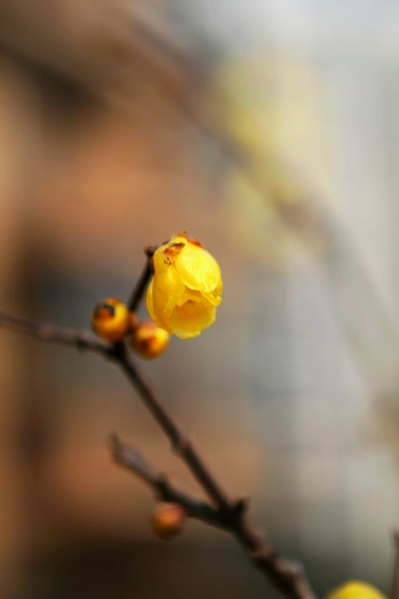
我们在一起 @ Jan 31, 2010
昨晚问问更新blog，四次都没有成功。检查时误删整篇文字，心碎的同时感叹大巴真如惊弓之鸟，难怪大巴的CEO被媒体称为“忧伤的年轻人”，究竟是什么字导致博客不能更新？今天上围脖才知，在问问凌晨反复尝试下，原来“死”、“被打死”成为被禁的罪魁祸首。好吧，现在大巴用户和大巴的读者也要跟着一块儿忧伤了！
——四次被禁的《在一起》，转自问问博客——
一只叫土豆的狗。
脏兮兮的出现在我家近的宠物店里，它生过N胎，两次剖腹产，耳朵被剪（为了美观），声带被割，犬牙也被磨成平的。它5岁了，生到不能生，子宫就被摘掉，然后就被丢弃到店里。
如果要为不公平的事情生气，得要生到什么时候？
即便对弱小的生命体抱有同情，我也时刻叮嘱自己要克制。因为克制自己的情绪和感情，也是一个人在社会上的生存之道。但愿我妈给我的情感量能够轻一些，可社会待我又不至于坏到什么地步，朋友多半有情有义，对于不幸的事情，我们心里明白，以微薄已力，大多数时候也只能做个旁观者。
K爷是我一年多前在垃圾堆边捡来的狗。当时它和一只母狗玩。母狗不愿跟我回家吃饭。一个礼拜后，这只叫小花的母狗在院子里被送去了西天。 我难受，也为在我家吃得皮毛贼亮的K爷感到庆幸。它与死亡擦边，自己的初恋也已结束。而浑然不知人世险恶，也是身为狗的幸福啊。
天气很好的下午，我和路边狗土豆一起玩，我唤：“土豆~！”它颠颠跑来，深深望着。它有一副好脾气，一个肥屁股，一把乱胡须，一双黑葡萄似的眼睛。和任何人都不闹别扭，它不是被宠大的孩子，温和之下自有一股生存的韧劲。
我没有办法养它，我对于它，就是一位平凡的路人而已。
若干日后，土豆被朋友茶收养。在我俩对上号之前，她也不知道土豆狗曾经和我玩耍。我想呢，人和人，和动物之间存在着潜伏的网络。和什么样的人成为朋友，和什么样的动物为伴，貌似都有安排，我们不过排队走入进程而已。生离死别要发生，重逢也终有时，各位不必过于忧虑。
据说土豆患有严重的分离焦虑症。我一度怀疑急性子茶会把它送还店里，即便如此我也不怪她，因为适应一只狗比经历恋爱困难得多，至少谈不拢的情人不会在你家四处撒尿和乱咬鞋子……但是她熬过来了，土豆症状减轻。我为自己低俗的判断感到无地自容。
今日家宴，我见到了温顺土豆。它深邃、粘人、一往情深。我知道它找到了归宿。看着这中年横福的家伙，我真心为它高兴！
深邃、粘人、一往情深的土豆。

在家常常做饭的人应该了解，准备这一桌饭菜不容易。兰质蕙心的问问在上周五晚上准备好净菜，等我们快到的时候开始烧。有肉骨茶、豆腐鸡蛋羹、韭菜炒淡菜、咸蛋黄豇豆、板栗炖小鸡、爆炒猪肝、南京农村香肠，我最爱吃她做的豆腐鸡蛋羹、韭菜炒淡菜、咸蛋黄豇豆、。她最得意的肉骨茶，俺生生没得尝到，都吃得狼吞虎咽唉~
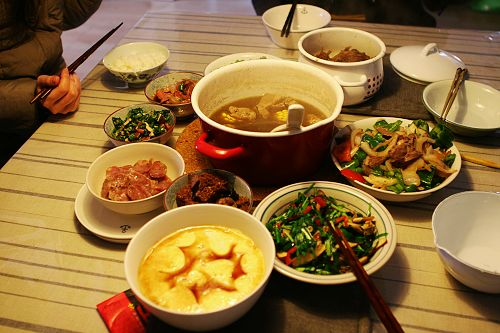
温柔在一起的问问和土豆。

谁敢挡在怪大叔“外外”与食物之间，怪大叔可是要发火的哦！
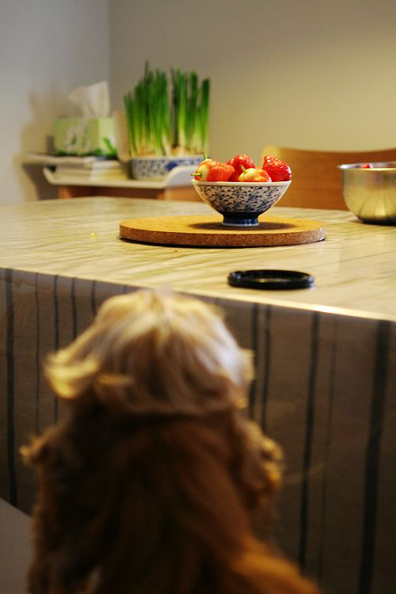
有爱的小原子亲手制作的披萨，两种口味：培根芝士和蘑菇花菜。

这把白色的小茶壶我也爱。

两个小朋友抢糖吃。

香香滴卡通土豆，被所有阿姨抱了个遍，真是受宠若惊的一天。

圆桌上的铁皮桶和插着的薰衣草来自扑土的IN CAFE，小原子连夜手工赶制的米色香袋我也有一个，等天晴时拍照，一定要看看上面那些特别的纽扣，太有爱了~

经典 @ Jan 26, 2010

甜心。 @ Jan 24, 2010
别人的累赘，却是我的甜心。


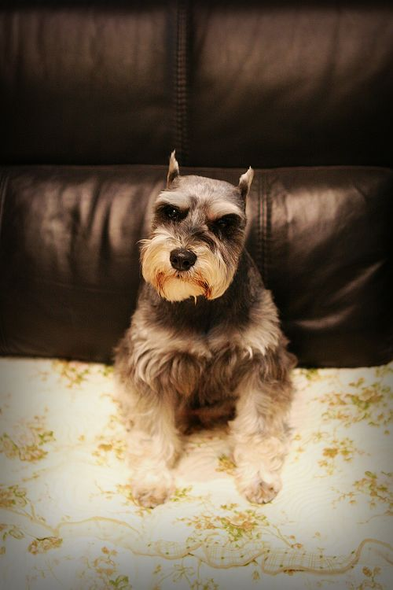
聊天 @ Jan 22, 2010
和钟点工大姐聊天，听说她山西老家的土地在建高速公路的时候被征用，原先18万一亩的征用补偿款，到了他们乡里仅为每人1600元，这个价位就产生在2007年。发钱的时候，乡里的官老爷忍心吗？土壤好的地儿被征用，土质不好的田仍健在。
我曾经认为城市人失业了那就真的失去了生活来源，可是农村人什么都失去了最后还有土地，可以自力更生吃饱肚子。现在，农村人不得不背井离乡到城里打工，城里人前仆后继做房奴还要纳税。
中共中央党校研究室副主任周天勇教授调查得到的数据：中国实际由国家财政供养的公务员和准公务员性质的人员超过7000万人，官民比例高达1：18。
中国历代官民比例表：
西汉：1：7945
唐高宗：1：3927
元成宗：1：2613
清康熙：1：911
中华人民共和国建国初：1：600
现时：1：18
那些忧伤的年轻人 @ Jan 22, 2010

1月13日，下午6点，博客大巴(blogbus.com)CEO窦毅拿着手机从座位上站了起来，在办公室里走了两步，又在原地转了个圈。
从1月5日博客大巴在互联网审查风暴中被封算起，已经八天九夜了。13日那天，窦毅打了无数个电话，手机也死机了四次，他对着电话，不停地重复相同的话语。现在，距离解封只有最后一步—通知域名服务商解封，“但是现在所有电话都联系不到他们。”
口干舌燥的窦毅其实应该算是个幸运儿，和这一轮互联网整治中受到波及的其他创业者相比，他至少知道需要补齐的是哪个手续，自己该往哪些方向努力。
王兴的微型博客网站“饭否”因为“违反国家相关规定”，于2009年7月突然被中国联通北京分公司IDC(互联网数据中心)停止服务之后，至今没有恢复。2009年11月，陈昊芝—译言网董事长兼总经理—也接到了IDC的通知电话，并被告知译言网违反的是“新闻信息服务管理规定”。一个月后，BTChina的站长黄希威接到了一封邮件，被告知自己的网站被取消了备案号……
我们采访到了四个年轻人。他们中最年长的也不过才33岁。他们是最新一代的创业者，他们身处最活跃的互联网市场，他们有无尽的创意和把一切付诸行动的勇气，但是，他们不快乐。
他们本不该如此。他们创办的网站都有数量不菲的用户，有那么一群人还成了他们的粉丝，他们的创业让很多找不到用户的同道羡慕。但现在，他们只是2009年中国互联网整顿中被涉及到的几个年轻人而已。
据人民网的统计，从2009年开始的中国互联网专项整治共涉及到十余万个相关网站，其中也包括了谷歌、百度、土豆、豆瓣等网站。
从被关停到恢复，博客大巴用了8天，译言用了差不多50天，这些日子都是让人忧伤的。陈昊芝说，自己儿子11月19日出生，可11月30日关站后，几乎一个月自己都没有机会抱抱他。“这个失落谁能理解？”
王兴、黄希威心情肯定更灰暗，因为他们的网站至今仍未恢复。连续创业者王兴已经开始为新的项目出差，自称“能力不够”，凑不够千万注册资金的黄希威却只能无奈地说“我力所不能及”，“关了就关了吧”。
同样在这段时间内，Twitter网站的创始人Jack Dorsey开始了自己的再次创业，正式进入电子支付领域。2009年，他的Twitter是最受关注的互联网公司。他意气风发，觉得未来要做的事情还有那么多。
他和窦毅、陈昊芝一般年纪，33岁，拥有着这几个年轻人所没有的东西—一张真正的笑脸。
2010年1月8日，译言网注册的一个新域名“yeeyan.org”上线，其原来的域名“yeeyan.com”至今尚无恢复的消息。陈昊芝期待着“yeeyan.com”能尽快解封。他觉得，现在的互联网环境如果让自己这样“创造社会价值和创新型企业的人”考虑后路，这是一件很可悲的事情。所以“就算是扛，我也会扛过去”。但是，要扛多久，“说实话，我现在还不知道。”
1月13日晚8点左右，在窦毅他们等待了整整一天之后，一位坐在电脑前的工作人员突然喊了起来，“我们被解封了！”几个脑袋顿时围了上去，大家不由自主地鼓了掌，遍地笑容。“赶紧公告！”窦毅一声令下。
20时05分，新浪微博(http://t.sina.com.cn)上出现了博客大巴的最新信息。
此时，窦毅习惯性地掏出手机，看了看，又放回了兜里—电话暂时可以休息一下了。
BlogBus
创立日期 2002年12月
创始人 郭晓雷。2003年10月，窦毅接手BlogBus，任CEO
用户数量 800万注册用户；近7万VIP用户
关停日期 1月5日下午5时左右中止域名解析
恢复日期 1月13日20时
关停原因 因为一篇已删除的低俗色情信息
原文来自：《第一财经周刊》
Dress Blog @ Jan 21, 2010
联体毛衣裤的问题在膝盖，坐时间长了会有鼓包，当然整件衣服柔软到毫无知觉，适合小周末穿。里面配了豆沙色的TEE，外面配长款修身羊毛大衣或短夹克、带帽运动衫。。。都可以。

自从上回染发之后，两天不洗就会出现头皮屑。。。以前我可从来没有这玩意儿，痛苦啊~这次烫的卷比上次小一些，因为头发长得快，那些露出本色的头发影响了细节。这次烫发不是为了批而是为了盘着扎着。

新货&吃货 @ Jan 20, 2010
闻听In Cafe进了新货，再忙也要去逛逛，赶在7：30前到她店里，就她一个人坐在里面不知道在干吗？也许是数钱？哈哈哈哈~然后我就冲进去以最快的速度拿了10个新进的碗和一个不知道品名的木盒子，走人。
话说越薄的瓷器工艺越高，这些和风系列的碗一直是我想找的。可是它们又不是和风中的浓烈的藏青色，碗上犹如梦幻的花纹，清淡又清淡。
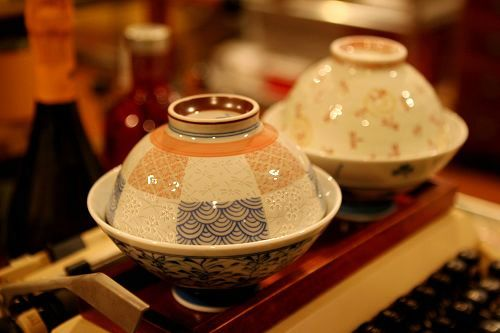
它们端坐在手动打字机上，别有风韵。以及这些IN CAFE的器具可以把咱家MIX个底朝天，很有生活的味道~

比我买的木盒子略小，在办公桌或者家里的餐边柜上摆放杂乱的文具或袋装咖啡，很不错。

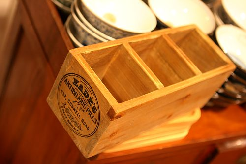
新进的美式搪瓷缸，用它喝冷饮比较合适。
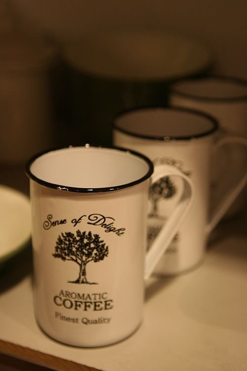
上次去店里还没见到圆点图案的它们。

和我那只可爱的白色壶有同样功能，可直接放煤气灶或电磁炉上加热。咖啡色的不错，适合我们这个年纪的家庭用，红色适合单身在家找找做家务的快感或招待朋友的时候拿出来炫炫。

这是上回买回的木勺和搅拌勺，手感很好。与用其他质感的勺子会有不同的奇妙感受。
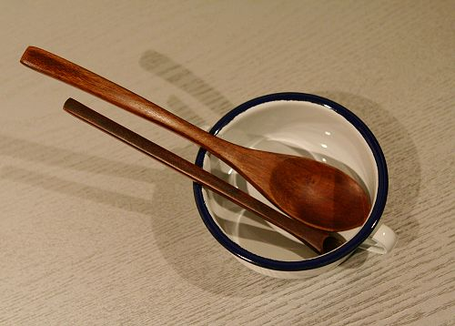
用买回的木盒子将散落在餐柜上的面包糕点收拢在一起，立刻变得有气质起来~
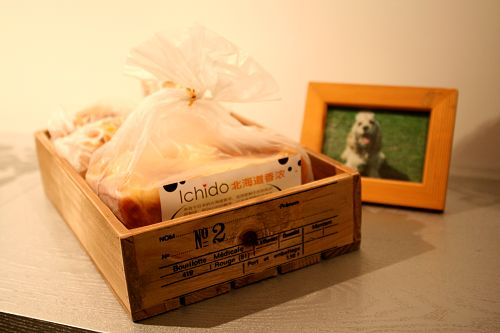
生活比较辛苦，除了美美的睡一觉，就剩下吃来犒劳自己，当然这顿也不是什么大餐。重点是朋友在一起说说话，解解闷。饭后逛商场，发现对什么都没有兴趣，是衣服鞋子的设计越来越没有新意，还是我得了无兴趣病？即使如此，我还是拎了条裙子回家。
有没有瞧见之前掉水里的白色SHARP手机？它还活着~

今天，有什么比做一个吃货更满足呢？
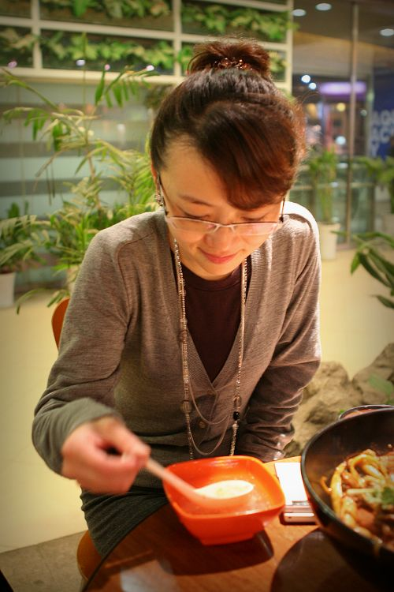
@Monday @ Jan 18, 2010
工作虽然忙，让人烦躁，可是毕竟还有周末，对吧？
在头发疯长的季节，我再次烫了发。
期望很卷很卷的效果，结果比预期稍微逊色些。
烫发后扎在头顶好象盘起来的效果。
等头发再长些，怎么办呢？
今天用珍珠项链搭配白衬衣去参加什么什么会，会上哈欠连天，不停流眼泪，可是又无法在那样的环境下入眠，真是折磨人。于是我就边打哈欠边擦眼泪，用完一片又一片面巾纸，被感动的惨状？今天估计只工作了约两小时，今天快活明天继续抓狂。


来来往往 @ Jan 13, 2010
恭喜大巴又开起来了，横戈的头终于不用继续大下去。那些失去联系的乘客此时是否惆怅万分？还继续写吗？大巴经历的小插曲比起google打算放弃中国市场相比，又算不上坎坷，毕竟一艘航空母舰掉转舵头不是轻而易举之事，失去google的我们，还能搜索到什么？
大巴一恢复，中国茶的反向连接里立刻出现许多从咸菜和少爷blog上过来的访问，与其从别人家转道，何不自己收藏下地址？也许，各位多的就是时间和精力？这两样恰恰是我最近奇缺的宝贝。不知道如今讨债与欠债，哪个角色更快活？我现在就是一个讨债鬼，天天一上班什么事不做就是接电话打电话，不同方式和口气，骂骂咧咧度过一天，我那通往心灵的小窗户，因为过度疲劳，感觉已经有老花迹象，照此下去折寿是必然结果。
轻装上阵 @ Jan 12, 2010
李开复：来自一个很有智慧的朋友：你不需要别人作为坐标来衡量你真实的自我、真实的价值。永远不会改变的是爱你的人对你的真爱。如果能够排除世俗的看法，心灵就可以轻装上阵，因为没有什么真实的东西是会真正失去的。
心理暴力 @ Jan 11, 2010
法国将成为世界上第一个认定夫妻或同居者之间的“心理暴力”为犯罪的国家。新法律囊括了各种各样的侮辱，其中包括没完没了地讽刺挖苦对方，毫无根据地指责对方撒谎以及威胁要动手打对方等等。警方第一次会给出警告，再犯会处以罚款、拘留甚至被判入狱。下次骂对方是猪头的要小心了。。。。（原文来自《新周刊》）
生动．生活@In Cafe @ Jan 10, 2010
躺被窝里看了三部电影已经到了下午2点，急忙起床赶去选植物，作为送给扑土店开业的礼物。我自信满满的以为我的车可以装得下一棵树，结果那株象小树一般高的滴水观音，尝试多种装运方式无果后，干脆租了辆小面包车将“树”拖到店里。
这间In CafeTB实体店比我想象中要大许多，还需要更多的商品来填充，也比我想象得要生动，白墙绿窗的简单装修，使其看上去倒有几分欧洲简约风格，虽然那里面多为日式商品。之前我总觉得日式餐具器皿不够大气，今天买回来之后摆在桌上把玩，发现它们令生活忽然生动起来，小巧可爱，温馨又甜蜜。看着它们，恨不能赶紧烧壶水，泡杯茶，幻想着学会冲泡奶茶之后，动作利落老练地在厨房里操作这些小东西，有了它们大概在餐厅里消磨一个下午也不会感觉枯燥，太让人期盼了！
今天这些小东西都属于我了。并且我把拆下的气泡袋集中起来，等下次去店里买东西还能包装用。

好爱这只搪瓷壶，木质把手和壶盖，一下子就区别于其它的水壶了。还有红色款，但我坚定地选了白色。为这只心爱的壶配了只垫子，摆放在茶几上也不怕。

复古剪刀与冰箱磁铁，现在很流行复古的玩意儿，虽然我很少做针线活，但可以收藏一把，时常拿出来抚摩观赏，等以后退休有时间了做布艺手工用。

这是我最满意的盘架，首先环保，其次很适合架盘子。我打算把在宜家买的中看不中用的盘架淘汰掉，换上这样的盘架，不同形状的盘子都可以被整齐的架起来，这样从餐边柜透明玻璃门看进去会多么地赏心悦目啊，所以还需要几个这样的盘架。
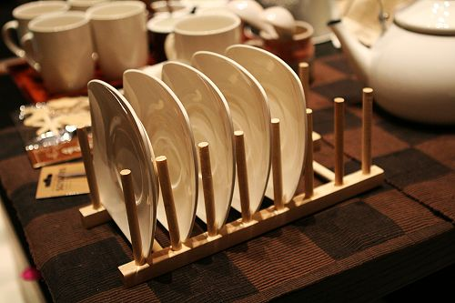
选了咖啡色和粉红色搪瓷缸，这两种颜色搭配在一块儿很时尚的感觉,喝喝饮料很不错。盛杯子的木托盘既方便又实用，有不同尺寸的。

=======================IN CAFE实体店======================
画面只展示了一半的店面，如果一半用来供咖啡奶茶和甜点，和朋友在这里消磨几个小时也不错。

这是我计划购回的锅，等有透明盖子的新货来，目前最钟情右边那只咖啡色的。

透明玻璃的小奶瓶，好有细节啊。早晨在餐桌上为每位亲爱的家人准备一只这样的瓶子，装上酸奶或鲜牛奶，除了食欲还会涌上无法克制的占有欲。以及那些棉麻的餐垫买回家摆放在客厅茶几上，上面放茶杯用品还挺出彩的。

老式相机，以及手动打字机，这些被时代和科技淘汰的用品，却为IN CAFE增添了一些怀旧气息。我刚进公司那会儿，公司还在使用手动打字机，真应该在公司淘汰的时候搬回家做装饰用。


此时，我们已经很少会看见卖扣子，尤其这么多扣子一起出现在商品中，当然也许出售的只是那些玻璃瓶。事实上我很需要一只这样的玻璃瓶，因为那些新衣服上的配扣都被我塞在不同的容器里，天晓得在需要的时候该怎么找到它们？
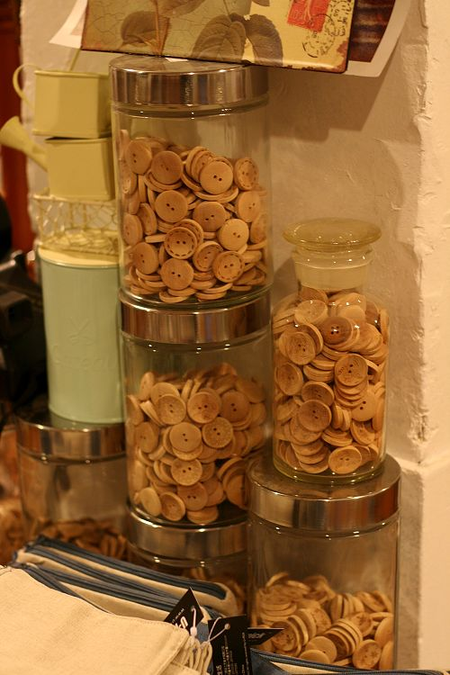
1000多元的铜壶，嫌贵吗？想买也买不到，非售卖品，是扑土心爱的壶。

它们很适合存放袋装茶与袋装咖啡，适合那些小巧又温馨的单身公寓。

IN CAFE的电话，非售卖品。
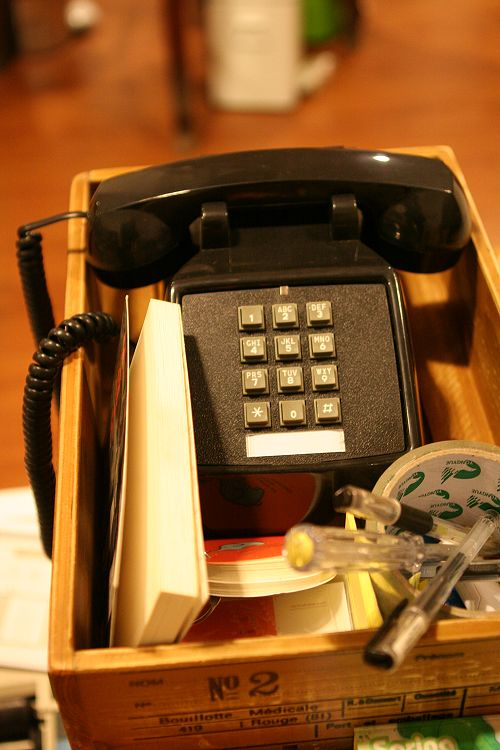
墙上那面钟不晓得卖不卖？

土豆也来拜访IN CAFE了，还吃了大惊喜小姐送的宜芝多蛋糕。

为朋友准备的温暖角落，注意那座沙发，是儿童床改造滴。
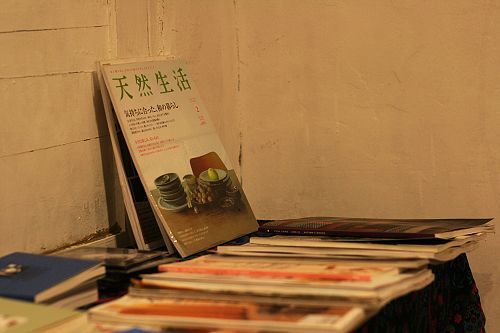


大爱无声 @ Jan 08, 2010
今夜是《花木兰》和《The International》。后者的女主角是《金刚》里的那位女演员，冲着她看的，看完知道世界有多黑，有人的地方就有黑暗。看完《花木兰》想到一句歌词：爱到深处，人孤独。
《花木兰》提升了赵薇、陈坤给我的印象，虽然赵薇的声线表达没多少改观，但演技还是有喜人之处。战争中的爱情，就是靠着压抑着的孤独的爱打动人，共同经历了十二年的苦难，回归太平社会又不得不牺牲彼此的愿望来换取和平，大爱无声！好象前面3／4都是铺垫，就为了末了，让人哭得稀里哗啦…能打动人的电影就是好电影。有人说“爱，只有时间和生死可以证明。”可是，现代人，还知道什么是爱吗？
囧！ @ Jan 07, 2010
囧有3000岁了--早在3000多年前“囧”是非常普遍的偏旁部首，西周毛公鼎上的“明”字就写成“朙”。这里‘囧’寓意为有瓦的窗户，月亮透过有瓦的窗户就明了。”（信息来源：《新周刊》）
这么有意境的字被现代人糟蹋了，就象被猥琐男糟蹋的小姑娘一样，囧！
平静中的快乐。 @ Jan 06, 2010
这会儿脑子里已经想不起来还有哪些工作要做，举着袋子吃咖啡豆，不对，是咖啡味的豆子，好吃。想着晚上看哪部电影，昨晚第6集里的哈利波特已经老了，故事还是没结束，留着第7集钱慢慢赚。连续几个晚上睡觉前看一部电影，娱乐自己放松神经，就象小原子手工制作围裙，也是娱乐方式的一种，有声色的生活还是看人滴！
小原子制作的围裙，针脚和大牌衣衣的手工有得一拼，间距大小一致，针脚细密，围裙上的商标令人叹为观止。我说小原子，你能帮我做件带袖子的围裙吗？“难度大，我给你买一条得了。”倒！“这围裙就是给准备下午茶的人使用的。”那么，等我学会磨咖啡冲奶茶，一定送我一条有情调的围裙哦！
话说中午又一块儿腐败了，主题是送别低碳人士。认识她之前我不知道“低碳”两字，一个OUT的人如今也能列举有关低碳生活方式一二三呢。听说哥本哈根的大会开的不成功，回来也不跟我们韶韶！饭桌上6人，其中4人是大巴用户，这会儿大巴歇了，没有博的生活是不是不适应啊？我们还有围脖可以织，这会儿我要笑了，免费的就是没保障，没准儿某一天围脖也可能被河蟹咯！目前的生活是相当地满足，平静中的快乐，好甜蜜。
组图里的大家，那两枚厨娘让我们嫉妒死，瞧她们乐的~
我家烧油腻食品多，没有带袖子的围裙给两护袖也可以，实用为先。

好爱这张的表情。

惊讶吧？！围裙上的小商标。
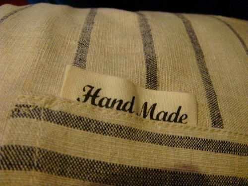
据说小原子做这个香包把家里的一包薰衣草茶全倒进去佬...还狠心剪下一把绢花中一只！猜想送给大家每人一包，家里的绢花岂不要全秃了？没关系，我们再送新的给你！

混迹于环保界的伪气候组织成员，右边是手工大师小原子。据说她做的奶茶比香港地道的丝袜奶茶还好喝呢~

为了你们，我只好牺牲自己的形象了，泪奔~以后得侧90度与小脸合影。
身上这件衣服的色标写着“咸菜色”，当时就想跑去告诉咸菜等人，还没等我说出口，咸菜和低碳便已脱口而出。
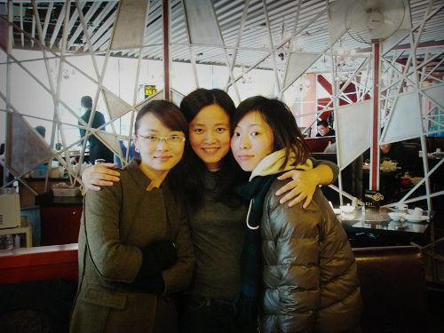
Dress Blog @ Jan 05, 2010
昨晚早早躺被窝里看Beyonce在拉斯维加斯的演唱会，准备看看美女，养养眼，就睡。Beyonce的表演很有暴发力和韧性，这么一个尤物，场内女歌迷居多，表演进行到中段就能确定她是典型的美国女权主义者！以及，无论肥瘦高矮平胸还是波霸，只要自信就是美！看看她的表演团队就不难理解！Beyonce嫁给JAY－Z也蛮符合她独立自主的行事风格！演唱会上的她俨然女性励志导师！表演很投入，人比歌儿讨喜！
今天轻微酷一把。


假期，这就完了？！ @ Jan 04, 2010
新年第二天补了5颗牙，错误的刷牙方式造成的问题。惊讶吧？赶紧谷谷一下正确的刷牙方式，以及转达医生的建议：尝试用儿童牙刷吧，虽然效率低，但是既轻柔又能刷到最里面的牙，并且在嘴角位置上下刷也有空间。大忽悠小姐的建议是：赶紧用电动牙刷啊，怎么还不用电动牙刷呢？这5颗牙正好位于嘴角两边，因为上下刷不方便就偷懒横着刷，长年累月横着刷它们，结果牙根被刷出来了，我伺候这口牙还真卖力啊。。。都怪俺娘吃的四环素，害得俺这牙怎么刷都白不了，还刷出了问题！这是牙齿美容都解决不了的属于70年代生人的老大难问题。
新年第三天的晚上，在又一次诚挚地召唤下，我还是精心打扮一番去赴听歌会的。好久没去酒吧，怎么着也要端正一下态度，结果在寒风中就穿了件衬衣和大衣的我以及我们苦等近一小时，门口的长队才有往门内蠕动的迹象。这是一个我不认识他他也不认识我的美国民谣歌手，整场听下来还不错，只是没有各女友的魅力大，大到我们热烈地聊天哈哈大笑被人训斥。。。好歹也是一次体验，这难得相见的兴奋感完全淹没了帅哥歌手的吸引（默默的说一句：前天不是才见面的么）。
那个极其卡哇伊的女生，灰常灰常卡哇伊，yeah~
还有两位女友在相机后面儿。
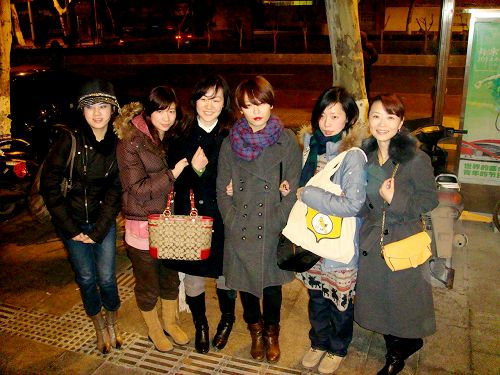
额滴神呐，烦不了了，手机、卡片机的效果差不到哪儿去挖，至少知道左边那个是卡哇伊，右边那位是知性又随和的大S。只有用她们的头挡住我那张大圆脸，才敢和小脸MM一起合影啊！以及怀疑我那SONY卡片机的设置有问题，画面颗粒多。


苏醒@2010 @ Jan 02, 2010
定了早晨7点的闹钟，准备赶个早儿去口腔医院看看那颗吃东西既感到冷又感到酸的牙齿，假期的早晨，起床的毅志力总是很薄弱，7点钟被放弃了。
可是8点半在手机上看过问问昨晚的新博《当肉食家遇上肉》，颇受鼓舞，立刻起床更新茶。要是工作日的早晨也有这样的起床速度该多好！
老父亲一星期前在电话里说：“今天你妈妈带我去新开业的万达广场，在河西金盛装饰城对面，好大的商场啊，我们元旦一起去，好吗？”于是我们一家人元旦在万达顶楼一起吃午餐，年纪大了的人越来越象孩子，当我老了，我一定随遇而安，不逞强不好胜，享受生活为主。
晚上7美见面会，本以为是8美，惟独缺了传说中的小原子。等了半个多小时才进入停车场，期间被一尾数138的二五车夹塞，那时侯甭提有多郁闷了，想象着前面那一车人被暴打的情形，这就过了10 来分钟，才等到停车的位子。
还没吃过几片五花肉，邻炉四美俨然肴核既尽，杯盘狼藉。。。此时只听吃饱了的问问轻声说道：“哎呀，我们应该慢条斯理地吃啊。。。”分享美味在一片乱战中结束。勤劳又能干的扑土耐心又无私地为大家烤土豆、蘑菇和牛舌。。。要知道那只不锈钢夹具需要多好的手劲才能长时间使用啊。在扑土的网店之后，她的实体店即将在新年开张，喜欢自制咖啡的朋友可以到她那里寻觅钟情的咖啡豆和各种精美餐具。以及，超爱回南京度假的Shuwua身上那件古典式耸肩小外套和问问日式打扮，问的想象力也体现在她的搭配上，让人惊喜又赏心悦目！（我第二天去寻她身上那件羽绒服就剩一件红色的了，不适合啊不适合）在时尚流行纵横的时代，穿出自己的风格和品味，不人云亦云，没有一定的底蕴和独特的审美鉴赏力是不行的。那么各位，3号的音乐会再见！
元旦，循序渐进回到生活中缓慢地喘息，在亲朋身边感受温暖与快乐，以及跟着我苦了几个星期的狗狗们，和我在阳光下玩它们热爱的球类运动。这一切让另一个我渐渐苏醒。借用Shuwua的一段话：又长一岁，不代表不能花痴兼白痴，我们要打破藩篱，做一个为了自己的乐子不惜追求低级趣味的人。发现同类时，认真抓住，决不放过。XX而不惑之一也。
难以忍受卡片机的效果，不过记录生活却非常方便，每天装在背包里不占地方也不会吓着别人。

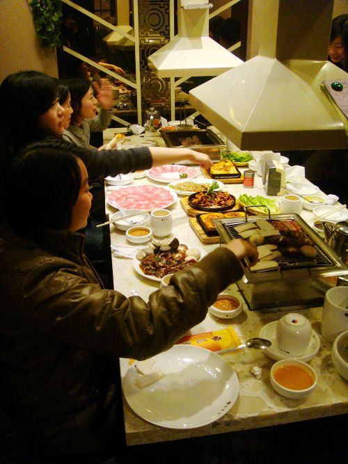
1月4日电影《阿凡达》即将上映，传说河西万达3D双机播放设备，不是IMAX的哦，确认过了！《阿凡达》电影票120元/张，星期一晚上7:30的票价优惠到50元，再一看只剩第一排和第二排两边的座位，罢了，等一周再看也不迟。